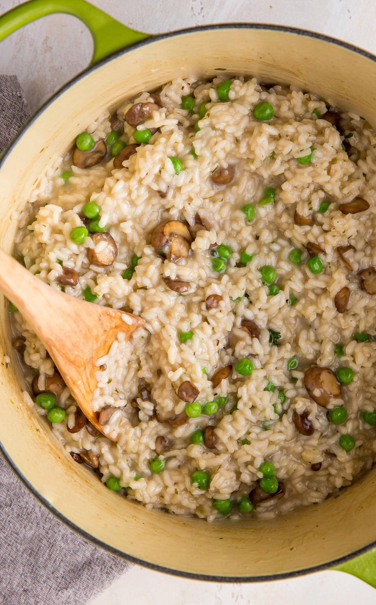

Classic Risotto
Home

The Classic Italian Blank Canvas
If you have never made risotto before, you probably think it is a super complicated dish that is only served
at fancy restaraunts or observed on an episode of Hell's Kitchen. But what if I told you that this is actually super
easy to make? Well, it is! The only think that makes it challenging is that it requires about 23 minutes of
undivided attention. This recipe is for a general, classic risotto, but what makes risotto so awesome is that it is
a blank canvas to upgrade into anything you want. Be creative! If you want to add some veggies, go for it! (you may
need to cook them separately first, and add them in the cooking process at different times, depending on what you
are adding.) I like to add mushrooms to my risotto for a classic italian flavor.
Ingredients
Amounts depend on how much you want to make, but I would start with what I have below.
- 1 cup Arborio Rice
- 1 Diced yellow onion
- 1/4 cup white wine (optional, but replace with some other acid)
- 4 cups chicken stock
- 1 cup grated Parmesan cheese
Directions
- The first thing we need to do is get the stock ready. Pour a box of chicken stock into a small pot and turn the heat
to medium. We want to get this stock hot, but not boiling.
- Once your stock is ready, get out a second pan, and start sweating your onions. After the onions have softened, add the uncooked
rice to the pan to toast it a bit. This adds nice flavor.
- Deglaze the pan with the wite wine (or any other acid, like vinegar or lemon juice).
- Now we begin the traditional cooking process for risotto. Take one ladle of your stock and add it to the pan. Continuously stir
until the liquid has almost gone away, but don't let it completely go away.
- Next, add another ladle of stock, and repeat. Keep doing this, over and over, until the rice is al dente.
- Finish off the risotto with the grated parmesan. At this point you can also top off the risotto with any cooked veggies.